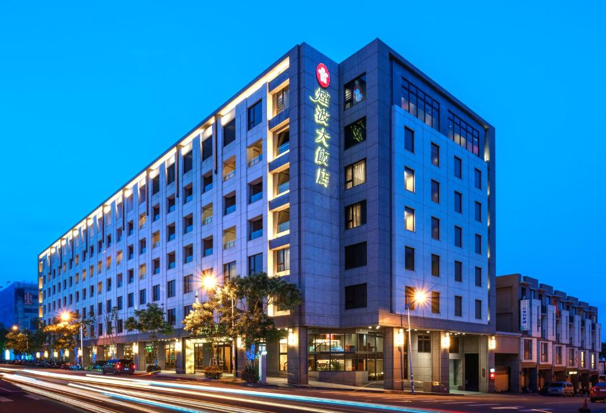
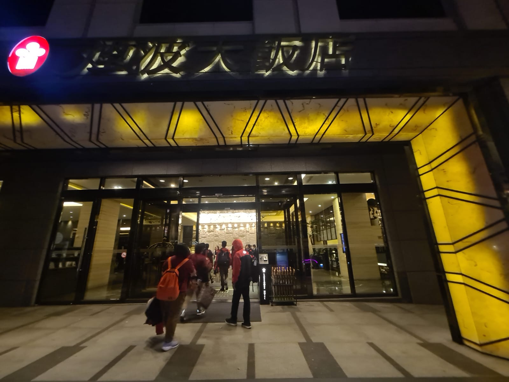
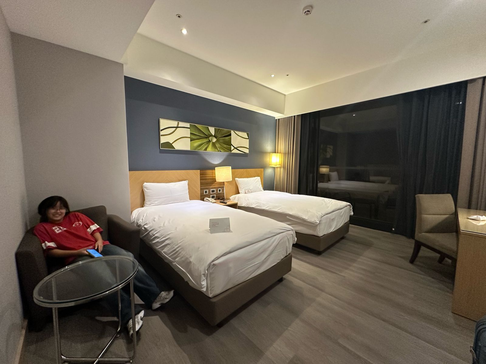
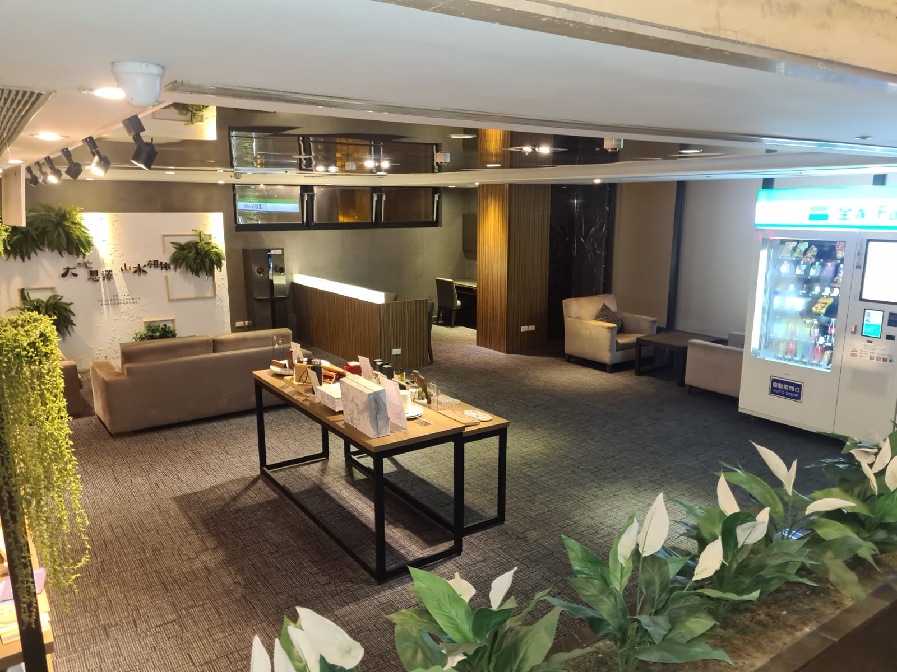

The Lakeshore Hotel Hualien is a well-known hotel located in Hualien, Taiwan, offering comfortable accommodations with scenic views of the Pacific Ocean or Qixingtan Beach. Other than that, it is known to be one of Hualien's best hotels so I chose this hotel as the hotel that I will write about for my bahasa Indonesia academic prompt.
| Bagian | Rincian | Informasi |
|---|---|---|
| Kepala/Orientasi | Judul Ulasan | Lakeshore Hotel Hualien: Pemandangan Alam Hualien Melalui Jendela Hotel |
| Foto |    | |
| Nama objek | Lakeshore Hotel Hualien | |
| Kategori (hotel atau restoran) | Hotel | |
| Alamat | No. 142號, Zhongmei Rd, Hualien City, Hualien County, Taiwan 970 | |
| Nama pemilik | Lakeshore International Hotel Group | |
| Tahun berdiri | 2011 | |
| No telepon | +886 3822 2666 | |
| Alamat website | https://hualien.lakeshore.com.tw/ | |
| Rating/kelas (bintang berapa?) | Bintang 4 | |
| Tubuh/Isi | Deskripsi tempat | Lantai dasar hotel atau lantai satu hotel terdapat meja receptionist, ruang duduk, vending machine, restaurant/buffet. Kemudian di lantai lainnya terdapat gym, parkiran, serta kamar-kamar yang memiliki banyak tipe/jenis. |
| 1. Jumlah kamar (untuk hotel) | 213 | |
| 2. Fasilitas yang dimiliki | Wifi gratis, parkir gratis, spa, resepsionis 24 jam, pusat kebugaran, restoran, sauna, layanan shuttle | |
| 3. Area publik (mal, bandara, RS, dll) yang berada di sekitar objek | Pasar malam Dongdamen, Pantai Qixingtan, bandara, stasiun kereta Hualien | |
| 4. Pertanyaan retoris/tesis (1 kalimat) | Apakah hotel ini direkomendasikan? | |
| 5. Kelompok usia berapakah yang banyak banyak mengunjungi tempat tersebut? | Keluarga (30-50th), pasangan (25-45th) | |
| 6. Bagaimanakah kesanmu terhadap objek tersebut? Jelaskan dengan diberi alasannya! | Hotel ini merupakan hotel yang termewah dan ternyaman yang aku kunjungi selama di Taiwan. Saat sampai di lobby hotel, kami disambut dengan design interior hotel yang menarik dan unik bertipe modern. Kamar hotelnya juga sudah terlihat nyaman karena desainnya yang minimalis dilengkapi dengan fasilitas kamar yang lengkap. | |
| 7. Adakah tempat lain yang serupa dengan objek yang kamu temukan dalam edutrip? Bagaimanakah perbandingannya? | Salah satu tempat yang serupa adalah Fullon Hotel. Lakeshore hotel memiliki breakfast yang sangat enak, sehingga terdapat satu menu yang diberikan penghargaan bintang michelin namun breakfast di fullon hotel sangat biasa, tidak banyak variasi dan rasa makanannya kurang menarik. Interior kedua hotel pun sangat berbeda dimana di lakeshore hotel interiornya lebih terlihat modern, mewah dan baru. Kemudian kamar di lakeshore Hotel Hualien lebih besar dilengkapi dengan shower serta bak mandi yang terpisah. | |
| 8. Penilaianmu tentang kelebihan yang dimiliki ditinjau dari:
|
|
|
| 9. Penilaianmu tentang kekurangan yang dimiliki ditinjau dari:
|
|
|
| 10. Kesimpulan hasil penilaian | Lakeshore Hotel Hualien merupakan hotel yang nyaman dan modern cocok untuk keluarga serta pasangan untuk melengkapi kunjungan ke Hualien. | |
| 11. Saran atau rekomendasi kepada masyarakat | Lakeshore Hotel Hualien merupakan hotel yang terkenal untuk pemandangannya maka untuk pemandangan yang optimal, pilihlah kamar dengan view laut atau gunung. | |
| Kaki | Identitas penulis resensi buku (Nama lengkap, kelas) | Vanessa Angel Setiawan 8A |